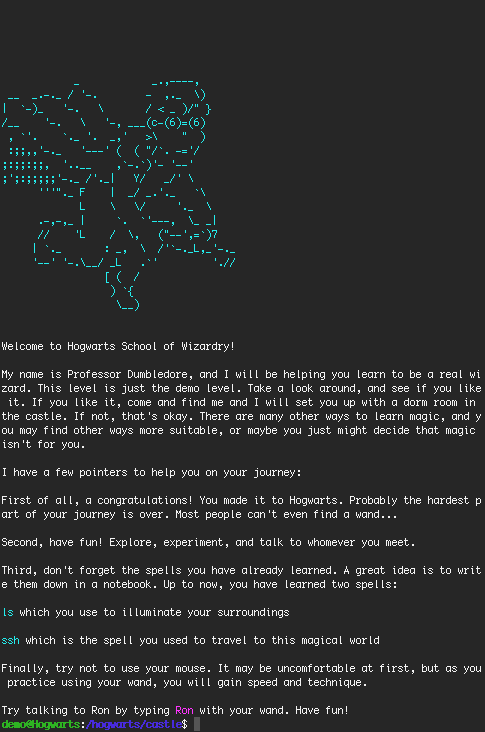

Finding a wand isn't too hard. Use google.
type something like "terminal mac osx" or "powershell windows" to find out where it is.
you should also set your theme to dark. On mac osx, this link seems to work well: change the wand color
I used the "Pro" settings and here's what you'd expect to see:
